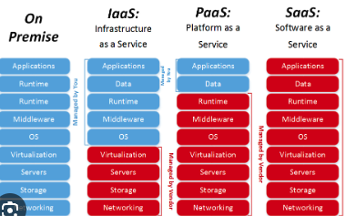
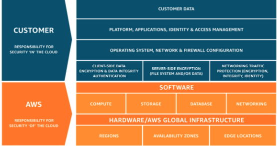
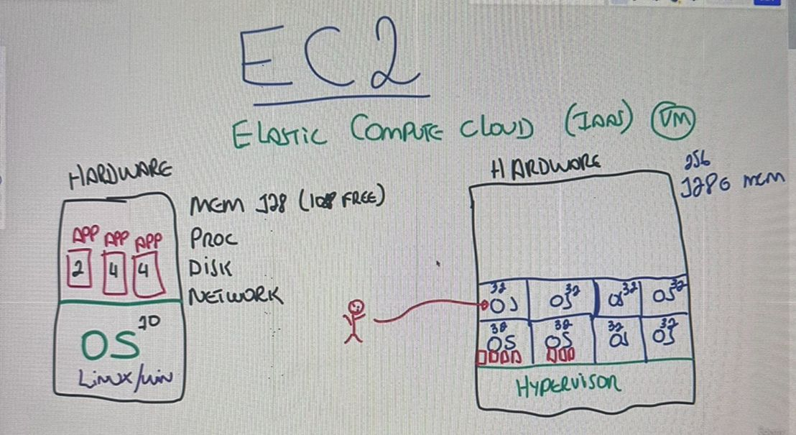
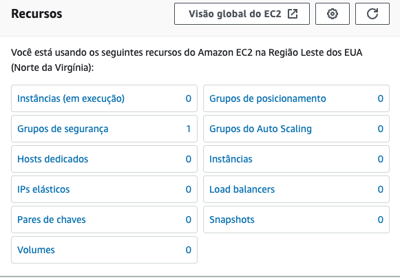

No cenário antigo era muito comum dentro das empresas termos nossos DataCenter's que geralmente eram lugares extremamente bagunçados e frios. Da maneira antiga, precisavamos nos preocupar com a localizacao, com o fornecedor dos hardwares, com a segurança do local, com a quantidade de recursos que iriamos querer adquirir, afinal, caso compremos a menos irá faltar e se comprar a mais irá sobrar, logo estaremos jogando dinheiro no lixo. É exatamente aí que entra a Cloud. Basicamente voce pode retirar o seu datacenter da sua empresa e passar a utilizar os datacenters da AWS (foco desse curso). Quais as Vantagens ? 1- Custo reduzidos em capital (hardware,software,manutencao,etc), pois tudo quem irá gerenciar é a AWS. 2- Escala Global - poderemos implementar nossos servicos mais próximos do nosso cliente de forma rápida e prática, nos levando ao 3- Performance. 4- Velocidade e agilidade, afinal, conseguimos iniciar um servico em minutos com dois clicks, no cenário anterior precisariamso comprar servidores, etc etc. 5- Aumentamos a segurança poi provavelmente a amazon será mais seguro que sua empresa, 6- Flexibilidade/Remoto , com o servico a distancia temos a possibilidade de trabalhar de qualquer lugar ao invés do funcionário ter que ficar indo até o seu próprio datacenter físico.
Agora que já sabemos o que são clouds, iremos ver os tipos de CLoud. São basicamente três, e o que vai mudando são as Responsábilidades mas em qual sentido ? O que fica de nossa responsábilidade e o que fica da responsabilidade da cloud. Por exemplo, o sistema físico On Premise tudo ficava por nossa conta, desde a rede, armazenamento, até as aplicações em si. Já na cloud isso muda, como podemos ver na imagem abaixo:
IAAS - INFRA AS A SERVICE Como o próprio nome já diz, é quando "contratamos"o servico de infra como servico. Nesse caso é a maioria que iremos ver. É quando alugamos estrutura de T.I de um provedor cloud, e nisso entra (servidor,vm,storage). Aqui é basicamente o hardware em si. PAAS - PLATFORM AS A SERVICE Vem toda a parte física e também a parte de software como a hospedagem, o sistema operacional, o banco, de forma que nós iremos apenas lidar com a aplicacao e os dados em si. Nao configuraremos nada do servidor em si. E por último temos o SAAS - SOFTWARE AS A SERVICE que nós basicamente nao precisamos controlar nada, é o nível mais alto da computacao em nuvem. (Gmail, Dropbox sao exemplos de softwares as a service, voce paga para usar o software como servico).
Agora que já sabemos esses detalhes, precisamos saber que esses datacenter físicos gigantes, possuem basicamente três tipos de "opções". PÚBLICA: público não tem haver com ser gratuito para uso ou não. Público é porque qualquer pessoa pode se cadastrar no site da AWS, e ter acesso aos servicos e seus valores/etc. Quando utilizamos os servicos publicos da aws, nao estamos pegando um servidor físico inteiro só para gente, e sim uma parte dele. PRIVADA: Algumas insituições não gostam e outras nem podem por lei (Bancos,Governo) confiar em nuvem pública e no serviço de segurança da AWS por exemplo (Ao proteger que no mesmo servidor um cliente nao consiga olhar dados do outro por ex) . ,logo, eles precisam optar por uma nuvem Privada. O preço é muito mais alto, porém ele tem a "confiabilidade" que no mesmo espaço físico ninguém mais terá acesso. E também temos a parte Híbrida que uma empresa pode selecionar apenas uma fração de seus dados e colocar em um servidor exclusivo.
Quando trabalhamos com núvem e nossa empresa depende dela obrigatóriamente, um fator importante é o SUPORTE que teremos caso algo aconteça, fique fora do ar por exemplo. A AWS oferece quatro tipos de suporte e seus benefícios exclusivos.
Todos terão Orientações gerais em 24h horas, Sistema afetado em menos de 12 horas.
Abaixo teremos o beneficio de cada um. Quanto mais caro, possui o beneficio dos anteriores.
Developer - 29 Dólares -
Business - 100 Dólares - Sistema Produção Inativo: 1 Hora.
Enterprise On-Ramp - 5.5k Dólares - Sistema Essencial aos Negócios: 30 min
Empresarial - 15k Dólares - Sistema Essencial Negócios: 15 min
IAM - Cuida de gerenciar acessos e recursos da AWS. Ele cuida de usuários, grupos, funções, políticas. Aqui ele pode criar usuários, criar grupos, trabalhar com regras, etc. Ele basicamente funciona para organizar os usuários que tem ou não tem acesso a plataforma da AWS. Até o momento só temos nossa conta criada ROOT. Porém é possível que a partir da nossa conta da AWS (ContaMaster) nós podemos criar usuários. Como se você fosse o dono da empresa, e através da sua conta pudesse criar funcionários (usuários), e setar exatamente o que cada um deles terá acesso dentro da nuvem.
Muitas vezes iremos nos deparar com situações que teremos tres funcionários com direito a acesso a EC2 por exemplo. Logo, é mais fácil ao invés de darmos as credencias/politicas para cada um, criar um grupo, com as politicas permitidas (no caso o EC2),
Além da facilidade de grupos, temos um terceiro chamado de Roles, são relacionadas não a usuários e sim a serviços. Por imagine que uma máquina virtual (EC2) precisa acessar arquivos em um banco (S3). Geralmente os bancos S3 tem configuracoes em quem pode acessa-los. Então, através das ROLES podemos setar qual máquina ec2 tem acesso a s3, ou entao todas as ec2's terem acesso as s3's e assim por diante. Para criarmos Grupos e Usuários basta procurarmos por IAM no console da amazon, e ao lado esquerdo teremos : Grupos de Usuários, Usuários.
IdentityCENTER - Antigo SingleSignOn - Podemos criar usuários através do IAM ou do IdentityCenter, que possui basicamente as mesmas funcionalidades, com alguns "upgrades". O principal fator é que ele nos permite acessar softwares externos com a autorizacao da AWS. Em resumo faz tudo do IAM, porém nos permite sincronizar com softwares de terceiros.
MFA - multifactoryAuthentication é basicamente quando "protegemos" ainda mais nossa segurança das contas aws. Para isso precisamos baixar em nosso smartphone um aplicativo chamado Google Authentication. Através dele, a cada 30 segundos ele estará gerando um número aleatório de 06 caracteres. Nós configuramos nossa conta da AWS para utilizart MFA ( IAM => Adicionar MFA.) , e ao logar, precisamos sempre olhar nosso celular, pegar o número exato, digitar e pronto. Conta protegida.
Através das Organizações, podemos literalmente criar uma organização dentro da nossa cloud. Por exemplo, imagine que nossa empresa seja de sao paulo, e ao decorrer dos anos ela se espanda para o rio de janeiro, para o sul, ou até mesmo par aoutro país. Como organizar isso tudo dentro de uma conta ? Pois se apenas formos criando usuários, ele irá ficar todo bagunçado para sabermos quem é quem, de onde é quem. Através das organizações, podemos criar subcontas dentro da nossa conta. Dessa forma, A conta root que criamos por ex, será a conta principal. Através dela, podemos criar uma subconta: Sao Paulo, Rio de Janeiro, Sul. Assim podemos subdividr nosas empresa em quantas partes quisermos, cada parte podemos criar as contas de seus funcionários, e no final através da root teremos acesso a tudo de forma unificada. Para habilitar as Organizações basta clicar em "minha conta"no canto superior direito, e em organizacao.Organizacoes criadas, podemos habilitar o IdentityCenter.
Estudar diferenca IAM VS IdentityCenter
A amazon e também a empresa que voce trabalha provavelmente irá se importar bastante com proteção/políticas de senhas. Podemos melhorar essa senha e obrigatóriamente a de nossos usuários. Para isso basta irmos em IAM -> Configuracoes da conta. Ali teremos regras previamente estabelecidas, e devemos personalizar as senhas.
Além do console (aws web) podemos acessar os sistemas da aws de outras duas formas, via CLI e via CloudShell. Para utilziarmos a AWSCLI, basta digitarmos cli aws no google e ver o passo a passo para instalar, assim comna propria aws podemos visualizar os comandos da cli. Mas, para utilizar o cli precisamos assim como visto, instalar um software em nossa maquina e também autenticar essa máquina. A terceira opcao nós nao iremos instalar nada em nossa máquina. É uma maquina linux que a aws disponibiliza para gente sem que precisemos nos autenticar, pois ela já estará dentro da nosas cloud. Para acessa-la, basta logarmos na aws, e no canto superior/ direito/central teremos o ícone do power shell. onde a partir dali poderemos começar a utilizar as linhas de código.
Mas e se optarmos utilizar a CLI ? Para utilizar a cli precisamos como visot, nos autenticar. Essa autenticacao nao será realizada apenas via Login e Senha. Ela irá nos pedir também a Acess Key, Private Key. Essas chaves podem ser geradas por usuários. Basicamente UserName, Password, MFA serão utilizados para console, e AccessKey e PrivateKey para CLI. Para criar essas chaves de acesso, basta ir em IAM => Usuários => Selecionar Usuário . Lá embaixo teremos uma sessao de Chave de Acesso, onde poderemos cria-las. A partir desse momento, teremos duas chaves, a chave privada e a chave de acesso. OBS: A única vez que iremos visualizar essa secretKey é nesse momento, ao fecharmos a tela, ela terá sido perdida, por isso é importante realizar o seu download.
Ambas são relatórios que podemos acessar para ter diversas informacoes sobre nossos "usuários". Através dessa CredentialReport Que irá nos falar sobre todas as credencias de todos os usuários. Se usam MFA ou nao, quando acessaram pela última vez, etc. Já o AccessAdvisor irá mostrar cada usuário e quais servicos cada usuário tem acesso. Para isso, basta irmos em IAM => Relatórios de Acesso. Ali teremos o Relatório de Credenciais. Já para vermos o que cada usuário tem acesso, basta irmos em usuários, selecionarmos o usuário, e ali teremos a opcao de Consultor de Acesso, que nos mostrará de forma bem mais detalhada.
Aqui iremos entender como funciona a AWS físicamente, ou o que chamamos de infraestrutura global. Ou seja, como que todo mundo no planeta tem ou pode ter acesso aos seus serviços ? Basicamente temos as Regiões, zonas de disponibilidade e os Pontos de Referencia. Basicamente teremos uma Região, que dentro delas teremos nossas zonas de disponibilidaes, que são nossos DataCenters com suas megas estruturas, podendo dentro de uma regiao, ter várias zonas de disopnibilidade , que são sempre interligadas entre si. ATÉ AQUI: Dentro das regiões possuímos nossas Zonas de disponibilidade (Datacenters, conectados entre si.). Mas também temos as Zona Locais, que são conectadas próximas as zonas de disponibilidade, que servem para colocar o mais próximo possível do cliente a computação, armazenamento, banco de dados, etc. Em resumo, temos as zonas de disponibilidade, e imagine que em uma cidade relativamente distante a ela, tenhamos um polo industrial, eles vão lá, eles alugam de um outro datacenter um espaço, e criam uma "zona menor" para suprir melhor esses clientes. E também temos o chamado de WaveLength, é feita exclusivamente para desenvolvedores, que permite uma latencia muito menor, focando em dispositivos móveis, proporcionando uma boa experiencia para o usuário. E para finalizar temos os Outposts que é a menor estrutura que a aws pode criar. Para suprir micro clientes.
Podemos entao observar que a AWS já possui zonas disponiveis em todos os continentes, e além disso a conexao entre os datacenter entre si, principalmente os próximos, é a rede com maior capacidade do planeta. Todas as regioes meio que se parecem uma só. Voce acessa servicos de uma regiao a outra la do outro lado do planeta com apenas cliques.
Região: Local/Regiao/Zona onde a AWS tem operação física.
Zona de disponibilidade: Datacenters físicos da AWS, podendo ter mais de um dentro de uma região.
Zona Local: Geralmente são zonas menores localizadas em alguma cidade próxima as zonas de disponibilidade, para suprir uma pequena cidade com um polo industrial por exemplo.
WaveLength - É exclusivo para desenvolvedores, permitidno que as aplicacoes subidas ali tenham a menor latencia para aplicacoes mobile.
Outposts - é a menor estrutura da aws, geralmente alugam uma partezinha de outro datacenter apenas para suprir algum cliente em específico.
Aqui iremos tratar das responsabilidades que a sua empresa/PersonalAccount, tem ersponsabilidade por uma parte da estrutra Cloud, e a AWS tem responsabilidade de outra parte dessas responsabilidades. O que isso quer dizer? Nem tudo que voce hospeda dentro da AWS e acontece algo de errado quer dizer que realmente é culpa da AWS. Nem tudo está encima da AWS, nós também temos fatias de responsabilidade.
Em azul (Customer), são as nossas responsabilidades, e em laranja (AWS) são as responsabilidades da cloud. Vale lembrar que essas responsabilidades sao responsaveis tanto no Google quanto na Microsoft tb. Em geral, é de responsabilidade da AWS a parte computacional, o armazenamento , a barte de banco de dados e a parte de rede. Não precisamos nos preocupar com a segurança de nada disso. Não receberemos nunca um email por exemplo informando que um datacenter ter parado. Nem que o disco do sotarage nao está resopndendo e precisamos troca-lo, ou entao que a rede estará bem próximo de 100% de utilizacao e precisaremos adicionar mais links... Quando pagamos por servicos estamos pagando por toda essa segurança. Agora, o que a AWS não consegue controlar? Os Tipos de Dados que colocaremos lá dentro, Por ex: podemos armazenar fotos proibas por leis, e isso não é responsabilidade da AWS. As aplicacoes, usuários criados, organizacoes tudo é de nossa responsabilidade. Por ex: Se um usuário for criado com acesso adm, e derrubar tudo, "cagar" o sistema inteiro, a responsabilidade é nossa de termos permitido aquele usuário de ter entrado. Sistemas Operacionais, Network, Firewall é tudo de nossa responsabilidade. Se criarmos um firewall que permite qualquer acesso e formos hackeados, a culpa é nossa.
Aqui provavelmetne é talvez o serviço mais utilizado da AWS. EC2 significa Elastic Compute Cloud. Ele é uma IAAS (Infra as a Service) da AWS para máquinas virtuais (VM). Entendendo uma VM, entendemos uma EC2. Vamos por antigamente. Antigamente tínhamos um servidor físico, onde compravamos o hardware por si só, compravamos memoria, processador, network, etc. Nele, instalavamos um OS (Linux/Windux), e no seu topo instalavamos nossos aplicativos. E quais eram os grandes problemas? Se tivermos 128gb de memório no servidor, um app usa 2, outro usa 4, outro usa 5, oS usa 10. Logo, estaremos usando nem 30gb de memoria, e teremos 90gb de memória parada e isso significa gastar dinheiro atoa. Através da virtualizacao (EC2), temos um cluster de servidores(vários servidores), onde possuímos o hardware de cada servidor, nesse harware temos instalado um HyperVisor que é responsável por instanciar diversas fraçõe de OS, e designar uma quantiadde de recursos para cada um. E é exatamente isso que a AWS te vende em forma de EC2. Uma fração de um servidor, onde voce instancia seu OS e coloca seus recursos.
Agora que já sabemos o que é um ec2, vamos entender suas peculiaridades. Quando tinhamos o hardware fisico em nossa empresa, nós definimos exatamente o que iriamos comprar. Ao usarmos o servico cloud, nós também temos como especificar o que queremos alugar da AWS. E aqui que entra o que chamamos de EC2 INSTANCES TYPES.. Existem diversos tipos de instancias otimizadas da AWS para cada caso de uso. CONCEITO QUE AWS COBRA EM PROVA. Como a aws já entende basicamente quem é o seu consumidor, eles já deixaram pré determinados alguns tipos de ec2 já com recursos pré definidos mediante ao oque você quer. Dessa forma voce nao precisa ficar configurando quanto de memoria, etc na mão. Por exemplo:
Uso Geral, Otimizadas para computação (+ CPU), Otimizada para memória (+ Memória), Computação Acelerada (+ ), Otimizada para Armazenamento. Ou seja, basicamente a AWS divide suas EC2 a base de suas particularidades.
Agora que já sabemos o que é uma EC2 e quais seus tipos, precisamos saber quais são os seus Valores. Mas antes de falarmos em valores, precisamos saber quais são os MODELOS DE AQUISIÇÃO. O primeiro que iremos falar é o SOB-DEMANDA, que é o modelo mais caro da AWS. É aquele modelo qeu voce abre o computador, entra no console, cria uma máquina e em questão de minutos ela já estará funcionando. Outro serviço é o SAVING PLANS que são os planos para economizar. Eles são bem mais baratos que o sob-demanda, porém é necessário que firmemos um contrato com a AWS de um a três anos. Porém a aws ainda possui uma terceira opção, chamada de SPOT. É um valor barato, que pode chega ra 90% a menos que o sob-demand. Mas o que ela é ? Ela cria sua EC2/Recurso baseado em uma instancia qeu a aws não está utilizando, porém depois ela pode querer utilizar. Ou seja, de uma hora para outra ela pode: "Tirar seu servidor do ar". Muito utilizado para testar aplicacoes, coisas que não necessáriamente estejam em ambiente de producao, Trabalhos tolerantes a falhas, aplicativos/aplicacoes para testes, etc. Na verdade ainda temos outras opcoes, como o Host Dedicados que são os mais caros. Estaremos pagando pelo host em si. Geralmente quem usa são empresas financeiras ou governos. Aqui estamos pagando pela nuvem privada. E por último mas não menos importante temos a Capacidade por Demanda. Aqui é um preco um pouco mais em cnta do que o sob demanda. É basicamente quando alugamos uma máquina por um tempo prévio, avisamos a aws: precisaremos de uma marca com x x x de coisas, que usaremos por 72 horas e deopis o servico é encerrado.
HOST DEDICADO: $$$$$ Servidor inteiro dedicado, nuvem Privada. Geralmente utilizado por instituicoes financeiras e Governos.
SOB-DEMANDA: $$$$ Máquina criada imediatamente, sem contrato pré estabelecido. Subimos ela e pagamos conforme formos usando por tempo indefinido.
CAPACIDADE-DEMANDA $$$ É quando alugamos por tempo pré determinado uma capacidade X de recursos. Ex: EC2 c/ tais configs por 72 horas.
SAVING-PLANS $$ São planos mais economicos, onde estabelecemos contratos pré definidos de 01 a 03 anos, informando a amazon quanto tempo ficaremos.
SPOT $ É quando a Amazon nos fornece uma instancia que não está sendo utilizada mas pode vir a ser. Logo, nosso serviço pode sair do ar a qualquer instante.
E como a AWS cobra esses valores? A AWS cobra cada instância por SEGUNDO. Em resumo funcion aigual uma academia, quanto mais comprometido formos, quanto maior tempo estabelercermos o contrato, mais barato será o servico. Quanto mais inesperado for, mais caro será o servico.
Para saber exatamente os valores podemos ir no site da amazon e ver os tipos recursos, e o que é adicional para cada máquina. Porém olhar tudo no olho pode se tornar um pouco confuso. Para solucionar isso, a AWS nos proporciona uma Calculadora de Preços,onde poderemos ir setando os recursos que gostaermos de ir adicionado a nossa EC2, e assim sabermos o quanto realmente iremos gastar.
A partir de todo nosso conhecimento adquirido nesse capitulo, iremos finalmente por a mão na massa para subir uma máquina EC2. Para isso usaremos um exemplo no qual criaremos um web-server com o objetivo de subir um site para a ec2.
A primeira coisa que precisamos fazer é irmos até a área de EC2 dentro da AWS para que possamos começar. Para testes, utilize o northVirginia. Pois ali encontramos as maiores zonas de disponibilidade e também os melhores valores $. Entrando dentro da área de EC2, a primeira coisa que nos deparamos é um mapeamento geral de todas as nossas EC2.
Para criarmos uma instancia, clicamos no botao laranja EXECUTAR INSTANCIA onde ele irá nos guiar para um passo a passo.
Passo 01: Escolher um nome para nosso servidor/ec2
Passo 02: Escolher qual SO será utilizado, qual tipo de Linux será utilizado, a imagem do linux.
Passo 03: Em seguida precisaremos selecionar o tipo de instancia (Qual máquina irá rodar, os recursos), como já vimos nos tópicos acima.
Passo04: Chave de Login - Para acessarmos essa máquina virtual de outro local, sua casa por exemplo, geralmente utilizaremos via SSH ou via ClientShell. Para que possamos acessar de casa ou Trabalho, ou de qualqeur local que nao esteja dentro da rede AWS, precisamos ter uma chave de login. Que pode ser criado ali mesmo. Usar RSA + .PPK
Passo05: Configurarcoes Redes - Configuraremos o firewall, quem pode acessar, quais tipos se pode ou nao http, https.
Passo06: Configuracao de Armazenamento onde selecionaremos os recursos da nossa máquina.
Após o passo a passo, podemos criar nossa ec2, que depois de cerca de cinco minutos ele irá subir nossa ec2. Dessa forma, ao voltarmos a área de EC2 ela já estará ali com todas as informações da mesma, como seu dns, ip publico, ip privado, etc. Ao selecionarmos um opnto, aparecerá uma série de informacoes abaixo. Provavelmente se colocarmos durante a criacao algum script inicial, após a máqiuna estar rodando, já podemos acessa-la através de seu ip-público via protocolo HTTP. Ou seja, ela já estará liberada para que qualquer pessoa tenha acesso a aplicacao apenas. Nao a nossa máquina para executar tarefas/mudancas. Para isso, é necessário como já vimos acesasr via PowerShell ou via SSH.